Anthropic：谨慎使用子Agent
来源：微信公众号 归档日期：2026-10-23 抓取状态：成功 原文字符：12972｜配图：14 张
摘要速览
- Anthropic 官网最佳实践文（作者 Diane Sarkis）：何时该把子 Agent 并回主 Agent 循环——Applied AI 团队对比多个企业部署发现，带 Skills 的单 Agent 在质量上常同时胜过「一个提示词包揽一切」和「多子 Agent」两种设计，成本与延迟还更低（有客户换单循环后快约 2 倍）；反面教材是各团队各做一个子 Agent、平台再搭编排器，架构变成组织架构图的翻版（康威定律），上下文在交接中丢细节。
核心内容
（待补充）
可执行启发
（待补充）
我的想法
（待补充）
原文沉淀
目录
- 全文
- 层结构 vs 1 个循环
- 大型组织搭建 Agent 的常见问题
- 用渐进披露的 Agent 循环
- 如何把子 Agent 并回主 Agent 循环
- 任务完成 evals
- 逐步减少子 Agent
- 合并领域 Agent
- 把子 Agent 当作工具调用
- 通过 Skills 和工具并入主 Agent
- 多个团队如何为同一个 Agent 做贡献
- MCP 工具
- Skills
- 知识库
- 加速迁移的工具
刚刚，Anthropic 在 Claude 官网发表了一篇 Agent 搭建的最佳实践文章。作者为技术团队的 Diane Sarkis，讲什么时候该把子 Agent 并回主 Agent 循环。
Applied AI 团队对比了多个企业部署后发现，一个带 Skills 的单 Agent，在质量上经常同时胜过「一个提示词包揽一切」和「多子 Agent」两种设计，成本和延迟往往还更低，有客户换成单循环后快了大约 2 倍。
文章点名的反面教材，是大公司里每个团队各做一个子 Agent、平台团队再在上面搭个编排器，最后 Agent 架构成了组织架构图的翻版（康威定律），上下文在交接中丢细节，子 Agent 越堆越多，系统提示词也被拼成了「缝合怪」。
替代方案是一个模型、一个上下文窗口，通过 Skills 和 tool search 渐进披露上下文和工具，Claude Code 面向新模型的系统提示词就因此削减了 80% 以上。子 Agent 并没有被否定，上下文膨胀、需要并行的独立任务、单 Agent 选不准工具，这三种情况下仍然该用，只是要按上下文拆，而不是按问题类型拆。
迁移上，先构建端到端的任务完成 evals（10 个黄金样例就够起步），再合并经常连着调用的子 Agent，保留下来的改成由主 Agent 当工具调用，最后把子 Agent 的提示词变成 Skills、API 调用变成 MCP 工具，一个一个对比 eval 再定去留。
各团队则改为维护 Skills、工具和知识库，由一个小型中央团队负责系统提示词和端到端质量。通篇读下来，这篇除了讲架构，有一半其实是在讲组织问题，Agent 最后被拆成什么样，往往取决于公司里谁负责什么……
下为全文，配套的迁移工具包和四个 /claude-api skill 在文末，文中的「我们」指 Anthropic。
全文
01
“ 原文：Building agents: When to fold subagents into your main agent loop [1] 作者：Diane Sarkis（Anthropic 技术团队成员） 日期：2026 年 10 月 22 日
在 Claude Platform 上构建 Agent 时，少用子 Agent，改用渐进披露的上下文和工具，可以在提升质量的同时降低成本和延迟。
下面讲讲什么时候该迁移，以及怎么迁移。
如果你在 Claude Platform 上搭的 Agent 包含多个子 Agent，可以用我们的迁移工具包 [2]看看哪些适合并回主 Agent 循环。
它会通过一套引导式流程识别你在用的模式、评估替代方案，并验证哪种做法最好。工具包里还带了一个演示，可以先在模拟系统上试一遍，再用到你自己的 Agent 上。
子 Agent 指的是拥有独立上下文窗口、工具和指令，由一个协调者统一调度的 Agent，它是 Agent 设计中的核心组件，擅长做验证、并行工作和按模块划分权限。
我们自己在 Claude Platform 上构建的很多 Agent 都用到了子 Agent，比如我们的多 Agent 研究系统 [3]。
不过，Applied AI 团队最近发现，不少企业的 Agent 部署在把路由器、规划器和领域子 Agent 并回主 Agent 循环之后，效果反而更好了。
在我们对多个企业部署的对比 [4]中，一个带 Skills 的单 Agent，在质量上经常同时胜过「一个提示词包揽一切」的设计和子 Agent 设计，而且单个任务的成本和延迟往往还更低。
比如有一家公司发现，自家面向客户的 Agent 里有十来个专家子 Agent，这让品牌调性很难保持一致，多出来的延迟也拖累了用户体验。
我们还经常看到一些 Agent 设计方案沿着一条熟悉的路线层层叠加，从一个意图分类器开始，再到一条固定的多步推理流水线、按用户群体分桶、各自独立的推荐分支，最上面还要再加一个多 Agent 编排器。
对这类方案，我们往往会反馈说，这些结构里的大部分都在替模型做它已经不需要别人代劳的事。
一份清晰的系统提示词、4-5 个轻量的数据工具，再加上严格的输出护栏，就能覆盖大部分用例。
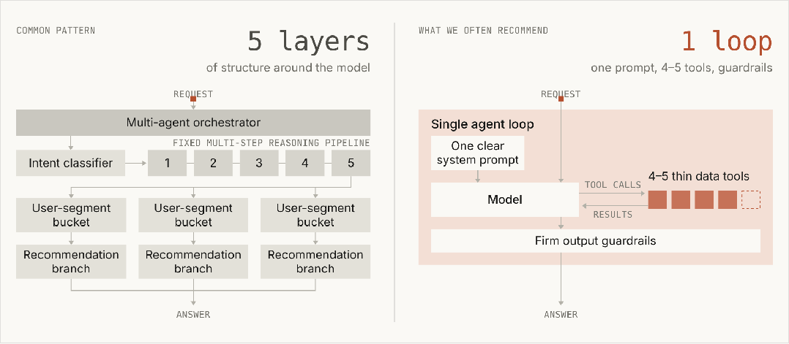
层结构 vs 1 个循环
动图左边是常见模式，模型外面包了 5 层结构。
请求进来后，先经过多 Agent 编排器和意图分类器，再走一条固定的 5 步推理流水线，然后分进不同的用户群体桶和推荐分支，最后才输出答案。
右边是我们更常推荐的 1 个循环，由一份清晰的系统提示词、一个模型、4-5 个轻量数据工具和严格的输出护栏组成。
模型自己发起工具调用、拿回结果，再经过护栏给出答案。
当然，子 Agent 仍然有它的用武之地，在研究前沿也是如此。以下情况适合使用：
• 单个 Agent 循环因为上下文膨胀，出现了可测量的性能下降
• 多个任务需要并行处理，每个任务都要一个全新的上下文窗口，任务完成后就可以丢弃
• 单个 Agent 难以选对合适的工具，或者系统提示词里存在相互冲突的指令
但我们也太常看到企业给每个团队、每类问题都单独配一个子 Agent，最后 Agent 架构成了公司组织架构图的翻版（这正是康威定律在起作用）。
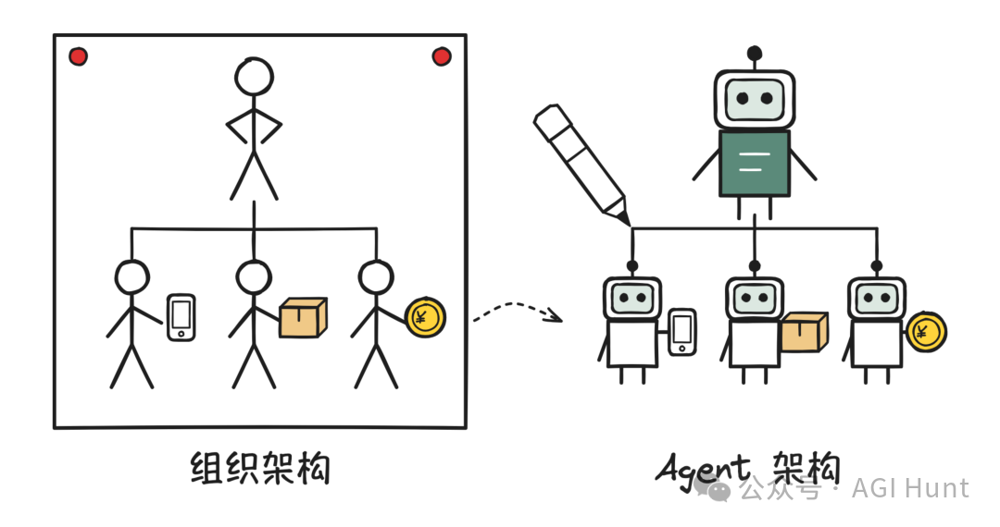
架构照着组织图长
本文结合我们在大型组织里搭建 Agent 的经验，讲讲什么时候该考虑把子 Agent 并回主 Agent 循环，以及其中的最佳实践。
大型组织搭建 Agent 的常见问题
02
企业常常希望做一个 Agent，把多个产品和能力统一到同一个面向客户的界面里。
这些能力通常分属不同团队，所以企业一开始会让每个团队各做各的 Agent，再由一个中央平台团队在上面搭一个编排器。
具体结构可以有好几种，比如「编排器 + 子 Agent」，或者一个单 Agent 把特定的几个 Agent 当作 MCP 工具来调用。
这看起来是最简单的方案，却会马上带来一系列复杂问题：
• 上下文管理：你得决定 Agent 之间交换哪些上下文，而细节常常就在来回交接中丢掉了。
• 子 Agent 泛滥：每个团队都上线自己的子 Agent，最后公司里冒出几百个功能重叠的子 Agent，既没有强制执行的标准，也没有明确的负责人。
• 缝合怪提示词（The Frankenprompt）：每个团队都往系统提示词里加一句话，结果规则相互冲突，Agent 说话也没有统一的口吻。
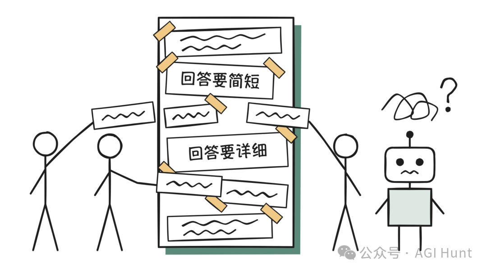
每人往里贴一句
• 未经审核、过度局部的 evals：每个人都加自己的 evals，而且都针对自己那部分子任务过度优化。没有人负责、也没有人维护整套 evals，管理层只能依据被稀释过、过于局部的分数做决策。
• 延迟：多 Agent 架构的复杂度会增加延迟。有一家客户把自己的多 Agent harness 和单 Agent 循环做了对比，后者的运行速度快了大约 2 倍。
用渐进披露的 Agent 循环
03
上面说的「编排器 + 子 Agent」设计，用来协调跨团队构建的各个专家，是一种合理的做法。
但更有效的做法往往是：通过 Skills 渐进披露上下文，通过 tool search 渐进披露工具。 也就是说，Agent 平时只看到 Skills 和工具的简短描述，需要时才完整加载。
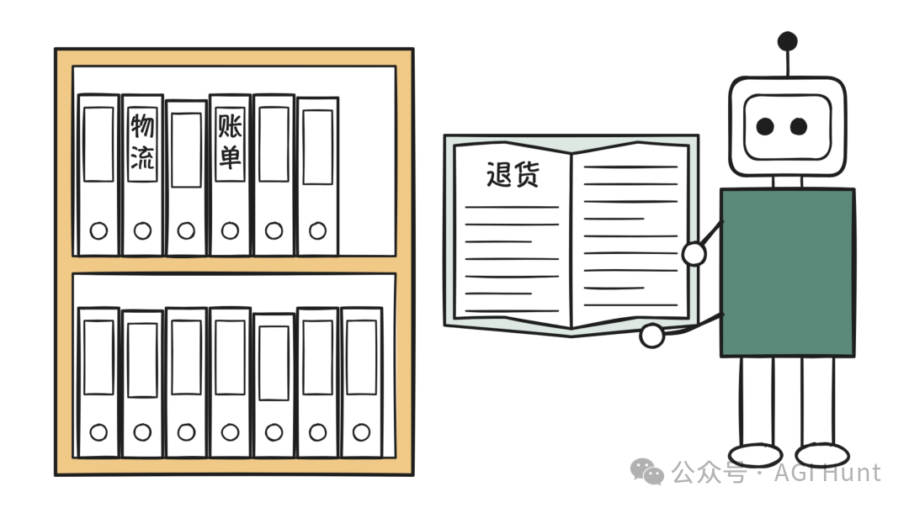
用到哪本，翻开哪本
这种做法之所以合理，有三个原因：
• 共享上下文能得出更好的答案：对长时间运行的 Agent，我们希望多个不同任务的上下文都待在主上下文窗口里。一个看过之前每一步结果的 Agent，能把它们串起来，得出的输出和洞察，比子 Agent 交回来的一堆摘要更丰富。这也意味着更少的上下文窗口、更少有损的交接 [5]。
• 渐进披露能避免上下文膨胀：这项技术让团队可以构建能完成各种任务的单 Agent，而不必把所有上下文一次性塞进一份冗长的系统提示词。过去团队把工作拆给多个子 Agent，主要原因就在这里，现在这个原因不存在了。事实上，我们为更先进的模型把 Claude Code 的系统提示词削减了 80% 以上 [6]，其中就包括通过渐进披露 Skills 和工具做的删减。
• 模型能力更强了：从 Opus 4.5 开始，模型在单个循环里能管理的事情，就远远超出了大多数团队的预期。Opus 5.5 和 Fable 5.1 已经没法关闭 thinking，最近的模型也越来越多地会边做边汇报进度、边检查自己的工作，这让 harness 里的一些组件变得多余。每一代新模型，都能让你把更多决策从 harness 交还给模型自己。更简单的循环也更容易迁移到下一个模型：在我们协助客户完成的迁移中，往往正是僵硬的多 Agent 结构，阻碍了新模型承担更多工作。
单 Agent 循环的设计需要纪律，包括精心管理的系统提示词、能在正确时机触发的 Skill 和工具描述，以及想清楚上下文窗口、记忆和笔记该怎么处理。
后面几节会深入讨论迁移和设计上的考量。
应该由一个中央团队负责端到端的质量和系统提示词，在每个新工具、每套新 eval 上线前做审核。这个中央团队保持精简，有助于快速迭代，也能降低大型组织里的协调成本。
如果你选择多 Agent 路线，就从可能行得通的最简单模式开始（生成器-验证器、编排器-子 Agent 或者其他）。
拆分边界时，要按上下文来拆：分给每个子 Agent 的工作，应该很少依赖系统的其他部分，并且只交回一个精简的结果（合适的候选有相互独立的研究路径、接口清晰的独立组件，或者黑盒验证）。
如果按问题类型来拆分 Agent，它们就会玩起「传话游戏」，信息来回传递，每交接一次，保真度就降低一次。
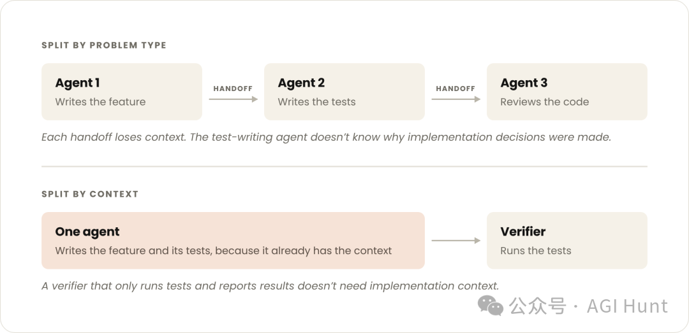
按问题类型拆 vs 按上下文拆
图的上半部分是按问题类型拆，Agent 1 写功能，交接给 Agent 2 写测试，再交接给 Agent 3 审代码。
每次交接都会丢失上下文，写测试的 Agent 并不知道当初的实现为什么要这么做。
下半部分则是按上下文拆，一个 Agent 同时写功能和对应的测试，因为它本来就有这些上下文，之后再交给一个只负责跑测试的验证器。
一个只跑测试、汇报结果的验证器，并不需要实现层面的上下文。
如何把子 Agent 并回主 Agent 循环
04
很多团队已经有一个编排器和一组专家 Agent 跑在生产环境里了。下面是我们建议逐步走向的单循环设计：
• 一个模型、一个上下文窗口，运行一个开放式的工具循环，限制条件（轮数和成本预算、写操作关卡）由 harness 来设定。
• 每一轮，模型发出一批工具调用。harness 并行执行这些调用，把原始结果交还给同一个模型，由它决定下一步：再发一批调用、向用户提问，或者直接作答。
• 当模型给出答案或者触及预算 [7]时，循环停止。作答之后，还可以选择再跑一次目标检查或验证器检查。
• 模型在第一轮就把计划写进上下文，随着结果陆续返回再修订。这是和「编排器 + 专家 Agent」架构相比最主要的变化：写计划的模型也是执行计划的模型，所以它可以在中途改计划。
上下文仍然会被加载，只不过改由 Agent 自己来管理：
• 不再需要一个根据规则目录去改写计划的代码步骤，因为每一步都由模型决定。
• 执行顺序和领域流程，挪进 Skills。
• 硬性限制（校验、审批关卡），以及对话中途临时需要的东西（比如查询记忆），挪进工具。
• 代码仍然可以用来加载那些成本低、几乎总是用得上的内容（比如实体解析步骤），也可以在循环所调用的工具内部，处理机械性的部分（构造请求体、解析数据流、在澄清提问之后恢复执行）。
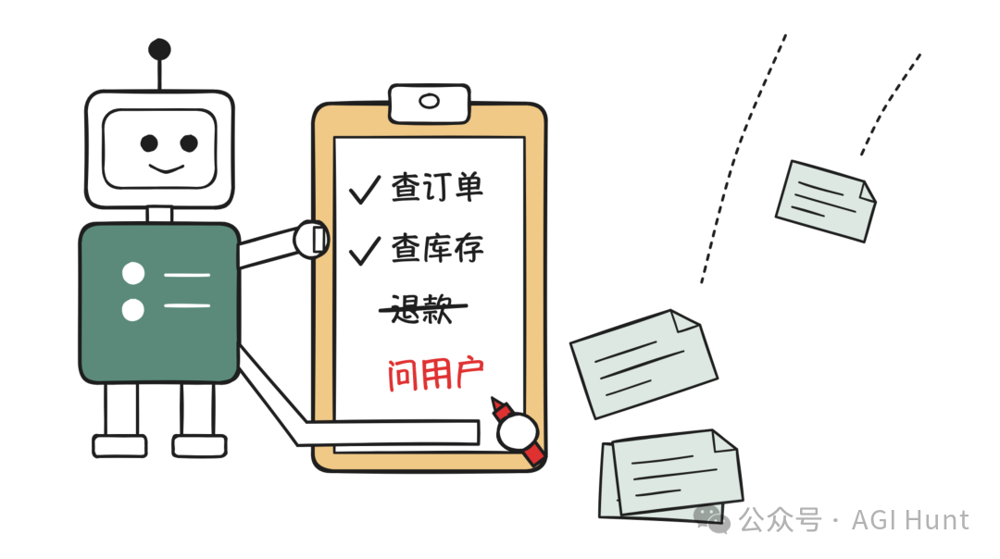
边拿结果边改计划
这种单循环设计，也有助于实现很多团队正在追求的最终形态，也就是一个能理解用户的高层目标、并代表用户采取行动的 Agent，因为它把 Agent 学到的一切都保留在同一个上下文里。
下面的建议，讲的是一个团队如何分阶段从多 Agent 系统过渡到单 Agent 循环，以及在这个过程中，多个团队怎样继续为这个 Agent 做贡献。
任务完成 evals
05
第一步是建立一套 eval，帮你判断该不该把某个子 Agent 并回主 Agent 循环。
我们见过的行之有效的 eval 结构，是一套由中央团队负责的共享端到端评测集，再加上各团队随自己的 Skill 一起交付的小型评测集。
哪怕只有 10 个黄金样例，也足够起步了。
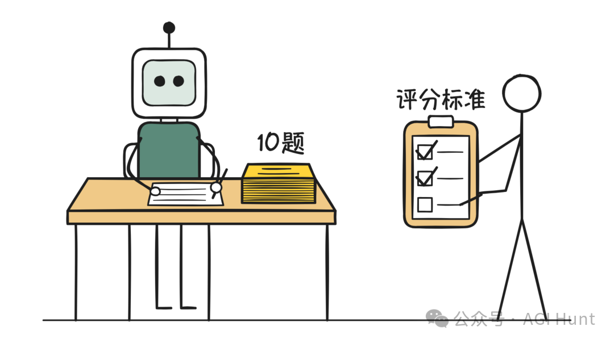
十道题就能开考
按照评分标准（rubric）给 Agent 的最终回复打分，是追踪回答质量的一个好起点。
在还保留编排器的阶段，你还应该追踪路由准确率（它选对子 Agent 了吗？）。
某个子 Agent 被并入之后，就改为检查 Agent 有没有加载正确的 Skill、调用正确的工具。
在对比不同架构时，任务完成情况最为重要，所以逐步把 evals 推向任务完成评测会很有帮助。
在内部系统难以重放、用户交互难以模拟的环境里，这件事可能会比较复杂。
我们内部的做法是给重要事件记录时间戳，之后就可以重放这些事件，作为有针对性的 eval 来跑，效果不错。
逐步减少子 Agent
06
走向单 Agent 循环，意味着把子 Agent 并入工具和 Skills，具体可以合并领域子 Agent、把它们当作工具来调用，或者用 Skills 和工具取而代之。

减少子 Agent 的三种方式
动图从左到右演示了这三种方式。
第一种是合并子 Agent，原本挂在主 Agent 下的 A、B、C、D 四个子 Agent，按共享上下文两两合并成「A + B」「C + D」，数量就少了。
第二种是当作工具调用，主 Agent 把每个子 Agent 当成工具来调用，子 Agent 只返回结果，对话始终由主 Agent 掌握。
第三种是并入 Skills 和工具，子 Agent 的提示词变成 Skills，API 调用变成工具，最后只剩下一个主 Agent。
合并领域 Agent
07
在第一次合并之前，先建一个小型的端到端 eval。然后按共享上下文来合并，从使用量最大的子 Agent 开始。
把那些依赖彼此输出、操作同一份数据，或者经常被一起调用的专家 Agent 合并起来 [8]。
比如，如果生产流量中有相当大一部分是先调用一个专家、紧接着再调用第二个，那这两个就是一对紧耦合的 Agent，适合合并成一个领域 Agent。
把子 Agent 当作工具调用
08
如果前面说的三种情况之一成立，你决定保留某个子 Agent，那么让主 Agent 把子 Agent 当工具来调用往往很有效，这样主 Agent 就能继续掌握和用户的对话。
只有一种情况，我们才建议做完全交接（由子 Agent 接管对话）：子 Agent 需要直接和用户交谈。
其余的一切，都可以用主循环里的 Skill 加工具来实现。
这样做，你可以为子 Agent 定义统一的响应 schema，由主 Agent 拿真实数据去核对结论，并精简最终汇总步骤的输入。
这是不错的第一步，因为你不需要重写子 Agent，而且在决定把哪个子 Agent 并入主 Agent 之前，它还能给你一个任务完成 eval 上的基线。
不过，有些问题依然存在：
• 每个专家 Agent 都有自己的提示词、上下文、负责团队和 evals
• 每次调用交回的，仍然是有损的摘要
• 每次调用都是一个嵌套的模型循环，会增加延迟
通过 Skills 和工具并入主 Agent
09
一次只并入一个子 Agent，把它的提示词变成 Skills，把它的 API 调用变成 MCP 工具。
然后对比有这个子 Agent 和没有它时的 eval 表现，再决定保留哪一种。
对比的时候，别只看最终分数，还要看看哪些任务的结果翻转了。
我们在一个示例客服 Agent 上测试时，把一个子 Agent 并入另一个之后，延迟是降低了，却也让一个原本能通过的流程失败了。
主 Agent 自己就能调用订单查询工具，于是直接作答，没有去问配送专家要送达日期。
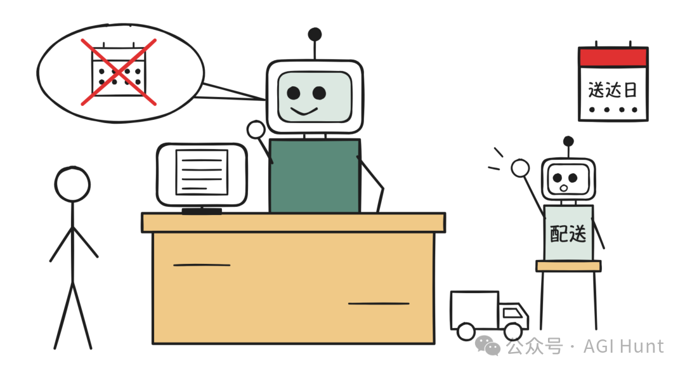
配送专家被晾在一边
所以每次改动之前，都要确保 eval 里有对应的任务，覆盖生产环境中每一条会一起运行的 Agent 链路，以及 Agent 绝不能违反的每一条规则。
每个任务也都要跑不止一次，因为像这样的故障，两次运行里只出现了一次。
多个团队如何为同一个 Agent 做贡献
10
领域推理可以从知识库、Skills 和 MCP 工具中获取。
各团队可以把自己负责的对象从 Agent 转向 Skills 和工具，再由一个小型中央团队负责系统提示词和端到端质量，其中包括在新的 Skill、工具和 eval 上线前做审核。
MCP 工具
11
当 Agent 需要执行操作、从系统里读取实时数据，或者按固定格式返回结果时，适合用工具。迁移期间，你也可以借助工具继续调用子 Agent。
我们建议按用户意图来组织工具（而不是一个 API 对应一个工具），因为一旦系统提示词里的工具定义超过 30-50 个，工具选择的准确性往往就会下降。
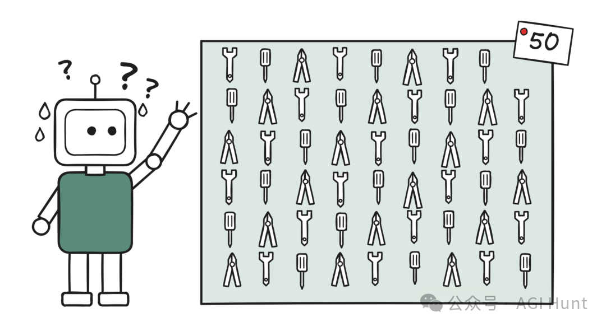
工具一多就挑花眼
使用带延迟加载的 tool search [9]，尽量少设硬性前置条件，必须要有的就挪进工具里。
比如 Y 需要 X 的输出，那就由 Y 的工具去检查 X 的输出在不在，并返回一条模型能据此行动的指令。
按用户区分的权限也是同样的做法。每个工具检查调用它的用户能看到什么、能做什么，然后返回一句模型读得懂的拒绝说明。
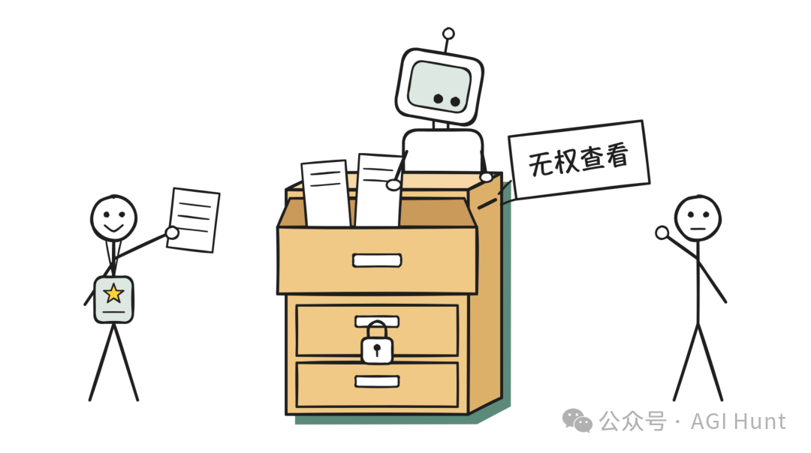
工具自己说不行
这样一来，同一个循环就能服务权限不同的用户，不需要每个权限级别各配一个 Agent。
Skills
12
当 Agent 需要知道某个团队是怎么做事的，比如过去写在专家子 Agent 提示词里的那些步骤、规则和判断，就适合用 Skills。
对于不断增长的 Skill 库，我们的做法是把维护工作交还给写 Skill 的人。
Claude 可以借助一些能构建、测试和精简其他 Skills 的 Skills，承担大部分繁重的工作。
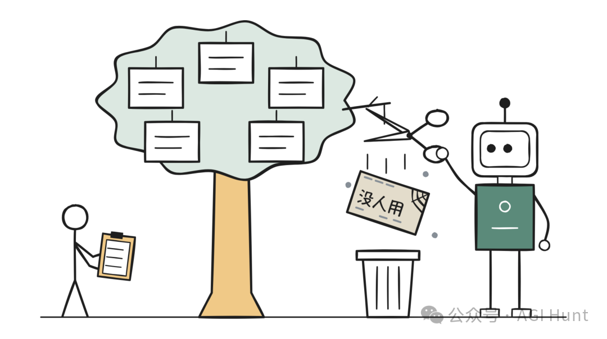
没人用的剪掉
为了防止 Skill 泛滥，可以让每个团队的 DRI（直接负责人）负责自己的 Skills，确保它们写得好、彼此不重复，并且附带合适的 evals 一起交付。
• /skill-creator：用来编写一开始就结构规范的新 Skill，也能审查已有的 Skill，对它们做精简、去重和重组。
• /skill-doctor：查看库里每个 Skill 的成本和实际使用频率，把没用的删掉。
知识库
13
知识库适合存放 Agent 只是偶尔才需要的参考资料。
事实和参考资料（政策、指标定义、产品规格）可以放在一个由模型调用的搜索或查询工具后面，也可以作为参考文件打包进某个 Skill。
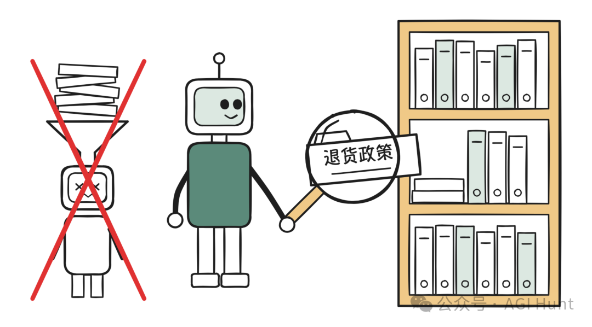
要用时自己去查
尽量避免用代码把这些内容检索出来，再贴进提示词 [10]。
加速迁移的工具
14
我们最近发布 [11]了一组 Claude API skills，能帮你完成上面提到的大部分工作。
我们的迁移工具包 [12]把这些 skills 串成一套引导式流程，用来评估多 Agent 系统，并把它迁移到单 Agent 循环。工具包附带一个演示，可以先试用，再用到真实系统上：
• /claude-api build-eval：帮你建立第一套由中央团队负责的端到端评测集，或者各团队随 Skill 一起交付的小型 evals。
• /claude-api prompt-audit：在你的提示词、Skills 和工具描述里，标出那些为旧模型写的指令，并以 diff 的形式给出修改建议。可以拿它跑一遍系统提示词，找出那些为早期模型加上、如今却让 Agent 变慢或变僵硬的规则。各团队的 DRI 也可以用它检查自己的 Skills 和工具描述。
• /claude-api hillclimb：对照现有的 eval 迭代改进一个应用。它可以用来做「并入还是保留」的对比（把一个子 Agent 并入成 Skill 加工具之后，让它在 Skill 和工具描述上反复迭代，看并入后的版本能否追平或超过原来的子 Agent），也可以用来优化系统提示词。
• /claude-api cost-optimize：分析你的调用都花在了哪里，并从 prompt caching、精简不必要的输入输出 token、effort 设置和模型选择等方面提出节省方案，每次只改一处。它能帮助降低某个设计的成本和延迟。
随着模型不断演进，我们对如何用好它们的理解、对最佳实践的建议，也在一起演进。
所以比起任何一种具体架构，它背后的原则要重要得多：度量，一次只改一处，留下经得起检验的。
这件事就是一个例子。随着模型越来越强、Agent 运行的时间越来越长，你的子 Agent 中会有越来越多可以变成 Skills 和工具。
不过，你不必一步到位。先建一个小型端到端 eval，并入一个子 Agent，只有当并入后的版本得分更低时，才把它保留为子 Agent，然后重复这个过程。
◇ ◆ ◇
[1] Building agents: When to fold subagents into your main agent loop: https://claude.com/resources/articles/building-agents-when-to-fold-subagents-into-your-main-agent-loop
[2] 迁移工具包: https://github.com/anthropics/single-agent-loop-kit
[3] 多 Agent 研究系统: https://www.anthropic.com/engineering/multi-agent-research-system
[4] 我们对多个企业部署的对比: https://claude.com/blog/the-anatomy-of-effective-commerce-agents
[5] 更少的上下文窗口、更少有损的交接: https://claude.com/blog/building-multi-agent-systems-when-and-how-to-use-them
[6] 为更先进的模型把 Claude Code 的系统提示词削减了 80% 以上: https://claude.dev/blog/the-new-rules-of-context-engineering-for-claude-5-generation-models/
[7] 预算: https://platform.claude.com/docs/en/build-with-claude/task-budgets
[8] 合并起来: https://claude.com/blog/building-multi-agent-systems-when-and-how-to-use-them
[9] tool search: https://platform.claude.com/docs/en/agents-and-tools/tool-use/tool-search-tool
[10] 用代码把这些内容检索出来，再贴进提示词: https://claude.com/blog/seeing-like-an-agent
[11] 发布: https://code.claude.com/docs/en/commands
[12] 迁移工具包: https://github.com/anthropics/single-agent-loop-kit
归属：[[02-输入/按主题/AI与效率/_index|AI与效率]]